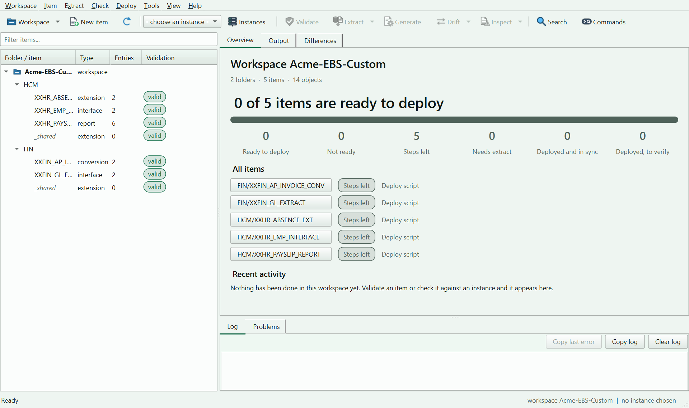
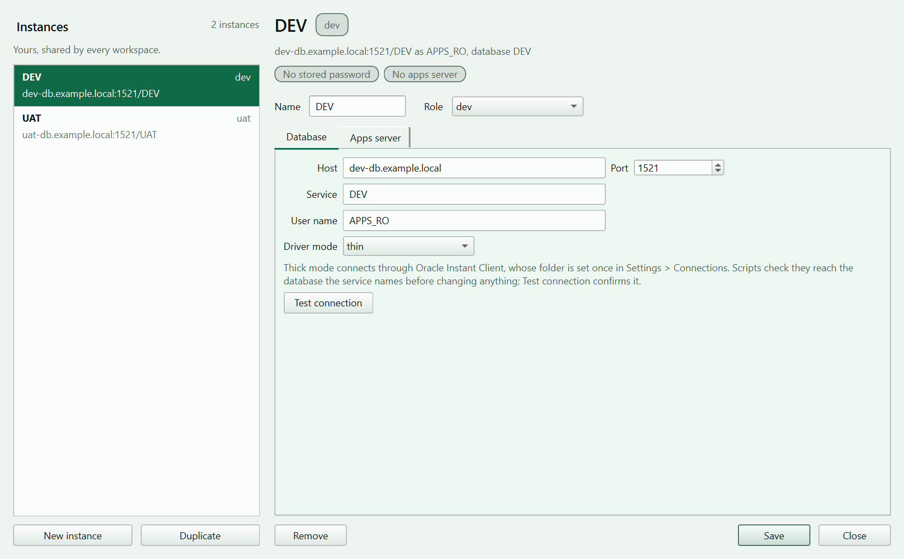
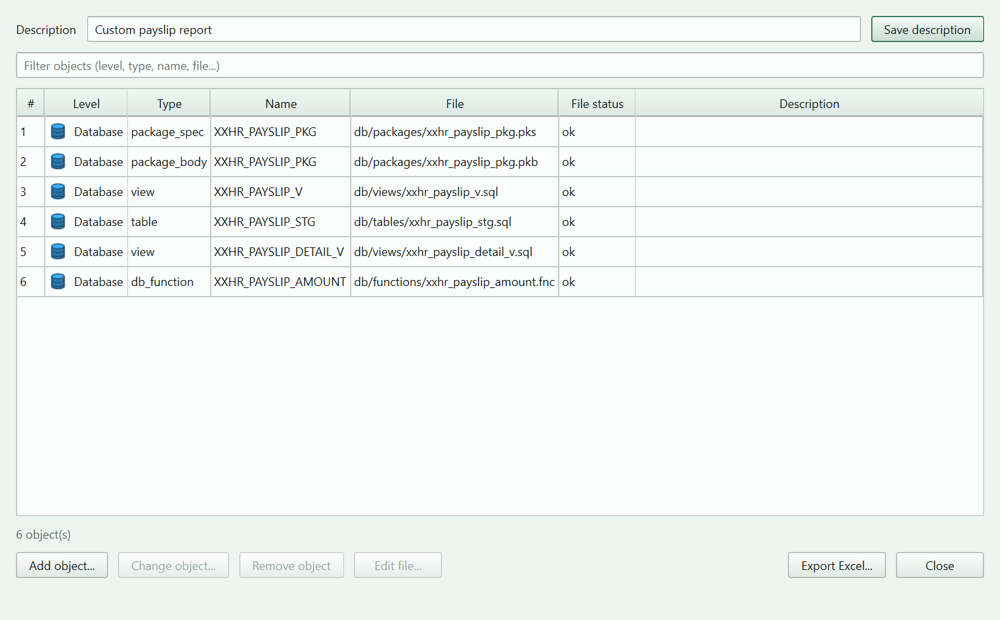
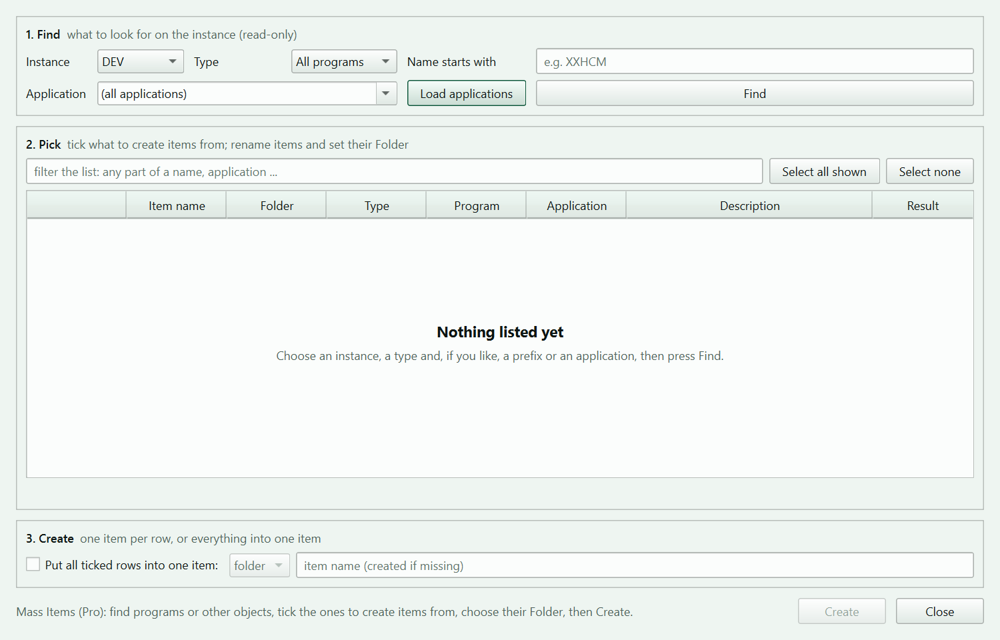
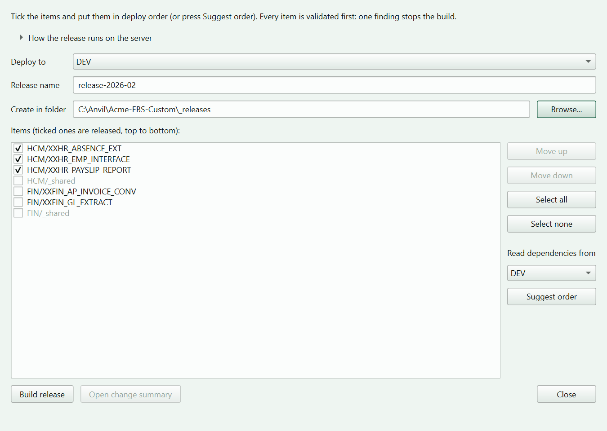

Extract
Bring the real objects in from any instance, straight from your PC or on the server.
Describe what you build, bring the real objects in from an instance, check them against your team's rules and generate the scripts that deploy them. Anvil then tells you whether an instance still matches.

Anvil never runs a deploy for you. It writes the script; a person reads it and runs it.
The only thing it runs on the apps server is the read-only extract it generates, and only when you ask.
Passwords live in Windows Credential Manager and are never written to a file.
Six steps, all inside the window. Set up once, then repeat steps 3 to 6 for every Item.
You stay in control. Anvil prepares and checks; the deploy script is run by a person, never by Anvil.
Make a workspace, then add a Folder for each functional area. It holds your work and your team's naming and checklist rules.
Add your instances and test the connection. The password is kept in Windows Credential Manager.
Create an Item for each deliverable (a report, a package, an interface) and list its objects.
Bring the real objects in from the instance, straight from your PC or from the apps server.
Check the Item against your team's rules, and see whether an instance still matches what you have.
Generate the deploy script, run it on the apps server, then register its log and let Anvil check the result.
Six things Anvil does for every Item, all from one window.
Bring the real objects in from any instance, straight from your PC or on the server.
Catch naming, prefix and content problems before anything reaches an instance.
Governed deploy and restore scripts for each target, ready for a person to read and run.
See whether an instance still matches, with every difference side by side.
Bundle several Items into one release, in a suggested order, with a change summary.
Create many Items at once and look inside the instance: invalid objects, errors, patching.
Marked features are in the Pro edition. Compare editions
Without a licence key Anvil is the Standard edition. A signed licence key switches on Pro.
Everything you need to bring one Item from instance to a checked deploy.
Everything in Standard, plus the features for teams and releases.
The licence key is checked on your PC against a public key built into the program. The check is offline and nothing is sent anywhere.
All screenshots use demo data. Click one to open it full size.




The Standard edition is free. A Pro licence key switches on the Pro features.
Version 1.1.0 · Windows 10/11 · 64-bit · free Standard edition · All versions and release notes
The program is not code-signed yet, so Windows SmartScreen may show "Windows protected your PC". Click More info, then Run anyway. Checksums are in the zip and in the release notes, so you can check the download first.
Tell us on GitHub. Pick what fits and fill in a short form; you need a free GitHub account.
Something does not work as it should. Tell us the version, what you did and what happened.
Report an issue →An idea that would make your EBS work easier. Describe the task behind it.
Share an idea →Check whether someone already reported it, and follow what is being fixed.
Browse issues →Reports are public: leave out passwords, host names and customer data.